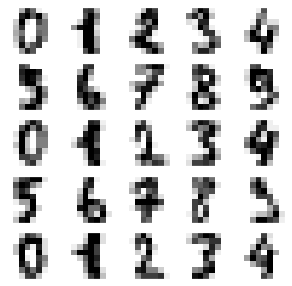
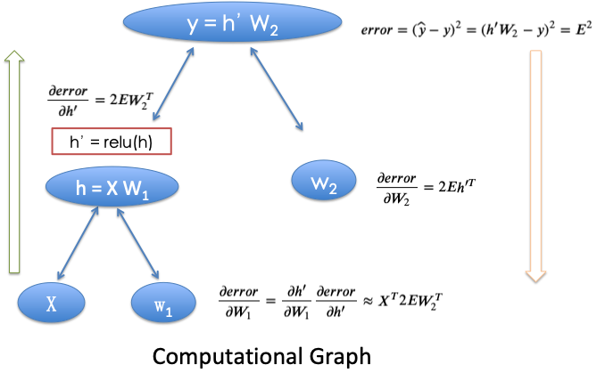

Recognizing Hand-Written Digits with Neural Networks¶

Recognizing Hand-Written Digits Using Numpy¶

Each image has 8*8 = 64 pixels
input = 64
[0, 0, 1, 0, …, 0]
batch size = 100
hidden neurons = 50
output = 10
using relu activation function
This is a copy of the test set of the UCI ML hand-written digits datasets https://archive.ics.uci.edu/ml/datasets/Optical+Recognition+of+Handwritten+Digits
%matplotlib inline
import matplotlib.pyplot as plt
import numpy as np
import seaborn as sns
sns.set()
import sys
from collections import defaultdict
from sklearn import datasets
# load data
digits = datasets.load_digits()
# prepare training sets
N, D_in, H, D_out = 100, 64, 50, 10 # batch size, input, hidden, output dimension
k = 0.9 # the fraction traning data
learning_rate = 1e-6 # 1e-1
L = len(digits.data)
l = int(L*k)
print(L, l)
1797 1617
Batches = {}
M = 200 # number of batches
for j in range(M):
index=list(np.random.randint(l, size=N)) # randomly sample N data points
y = np.zeros((N, 10))
y[np.arange(N), list(digits.target[index])] = 1
x=digits.data[index]
Batches[j]=[x,y]
# softmax
def softmax(x):
e_x = np.exp(x - np.max(x)) # to avoid inf
return e_x / e_x.sum(axis=0)
def softmaxByRow(x):
e_x = np.exp(x - x.max(axis=1, keepdims=True))
return e_x / e_x.sum(axis=1, keepdims=True)
# flush print
def flushPrint(d):
sys.stdout.write('\r')
sys.stdout.write(str(d))
sys.stdout.flush()
w1 = np.random.randn(D_in, H)/H
w2 = np.random.randn(H, D_out)/H
w1c = w1.copy() # for comprision in viz
w2c = w2.copy()
Loss=defaultdict(lambda:[])
# traning
for t in range(200):# epoch_num
flushPrint('epoch ='+str( t))
for j in Batches:
x,y=Batches[j]
# Forward
h = x.dot(w1)
h_relu = np.maximum(h, 0)
y_pred = h_relu.dot(w2)
y_pred_soft=softmaxByRow(y_pred)
# loss
loss = np.square(y_pred_soft-y).sum()
Loss[j].append([t,loss])
# Backprop
grad_y_pred = 2.0 * (y_pred_soft-y)
grad_w2 = h_relu.T.dot(grad_y_pred)
grad_h_relu = grad_y_pred.dot(w2.T)
grad_h = grad_h_relu.copy()
grad_h[h < 0] = 0
grad_w1 = x.T.dot(grad_h)
# Update weights
w1 -= learning_rate * grad_w1
w2 -= learning_rate * grad_w2
epoch =199

https://pytorch.org/tutorials/beginner/pytorch_with_examples.html#pytorch-tensors
learning_rate = 1e-6
for t in range(500):
# Forward pass: compute predicted y
h = x.mm(w1)
h_relu = h.clamp(min=0)
y_pred = h_relu.mm(w2)
# Compute and print loss
loss = (y_pred - y).pow(2).sum().item()
if t % 100 == 99:
print(t, loss)
# Backprop to compute gradients
# of w1 and w2 with respect to loss
grad_y_pred = 2.0 * (y_pred - y)
grad_w2 = h_relu.t().mm(grad_y_pred)
grad_h_relu = grad_y_pred.mm(w2.t())
grad_h = grad_h_relu.clone()
grad_h[h < 0] = 0
grad_w1 = x.t().mm(grad_h)
# Update weights using gradient descent
w1 -= learning_rate * grad_w1
w2 -= learning_rate * grad_w2
# Test
TestData=digits.data[-(L-l):]
PredictData=np.maximum(TestData.dot(w1),0).dot(w2)
compare=np.argmax(PredictData,axis=1)-digits.target[-(L-l):]
Accuracy=list(compare).count(0)/float(len(compare))
Accuracy
0.9388888888888889
Recognizing Hand-Written Digits Using Pytorch¶
Using relu for only one time
learning rate = 0.1
choose to use MSELoss
Convert y_batch from the form of [1] to the form of [0,1,0, 0, 0, 0, 0, 0, 0, 0]
from sklearn.model_selection import train_test_split
import torch
from torch import nn, optim, from_numpy
import numpy as np
Xtrain, Xtest, ytrain, ytest = train_test_split(digits.data, digits.target,
train_size = 0.9, test_size = 0.1, random_state=1)
Xtrain = torch.tensor(Xtrain, dtype = torch.float32)
ytrain = torch.tensor(ytrain, dtype = torch.int64)
Xtest = torch.tensor(Xtest, dtype = torch.float32)
ytest = torch.tensor(ytest, dtype = torch.int64)
batch_size = 100
train = torch.utils.data.TensorDataset(Xtrain, ytrain)
train_loader = torch.utils.data.DataLoader(dataset=train,
batch_size=batch_size,
shuffle=True)
test = torch.utils.data.TensorDataset(Xtest, ytest)
test_loader = torch.utils.data.DataLoader(dataset=test,
batch_size=batch_size,
shuffle=True)
from torch.nn import functional as F
class Model(nn.Module):
def __init__(self):
super(Model, self).__init__()
self.l1 = nn.Linear(64, 50)
self.l2 = nn.Linear(50, 10)
def forward(self, x):
out = F.relu(self.l1(x))
out = self.l2(out)
y_pred = F.softmax(out, dim = -1)
return y_pred
# our model
model = Model()
criterion = nn.MSELoss(reduction='mean')
optimizer = optim.SGD(model.parameters(), lr=1e-1) # learning rate is very sensitive
def get_prob(y_batch):
y = np.zeros((len(y_batch), 10))
y[np.arange(len(y_batch)), list(y_batch)] = 1
y = torch.tensor(y, dtype = torch.float32)
return y
# Training loop
num_epoch = 100
for k, epoch in enumerate(range(num_epoch)):
for x_batch, y_batch in train_loader:
# Forward pass: Compute predicted y by passing x to the model
y_pred = model(x_batch)
y_batch = get_prob(y_batch)
# Compute and print loss
loss = criterion(y_pred, y_batch)
#loss = criterion(torch.max(y_pred, 1)[1], y_batch)
if k % 100 ==0:
print(f'Epoch: {epoch}/num_epoch | Loss: {loss.item():.4f}')
# Zero gradients, perform a backward pass, and update the weights.
optimizer.zero_grad()
loss.backward()
optimizer.step()
Epoch: 0/num_epoch | Loss: 0.1011
Epoch: 0/num_epoch | Loss: 0.1043
Epoch: 0/num_epoch | Loss: 0.0998
Epoch: 0/num_epoch | Loss: 0.0977
Epoch: 0/num_epoch | Loss: 0.0963
Epoch: 0/num_epoch | Loss: 0.0921
Epoch: 0/num_epoch | Loss: 0.0955
Epoch: 0/num_epoch | Loss: 0.0981
Epoch: 0/num_epoch | Loss: 0.0964
Epoch: 0/num_epoch | Loss: 0.0915
Epoch: 0/num_epoch | Loss: 0.0840
Epoch: 0/num_epoch | Loss: 0.0882
Epoch: 0/num_epoch | Loss: 0.0974
Epoch: 0/num_epoch | Loss: 0.0893
Epoch: 0/num_epoch | Loss: 0.0843
Epoch: 0/num_epoch | Loss: 0.0885
Epoch: 0/num_epoch | Loss: 0.0624
Model Validation
# Test the Model
model.eval() # Change model to 'eval' mode
correct = 0
total = 0
for xval, yval in test_loader:
outputs = model(xval)
_, predicted = torch.max(outputs.data, 1)
total += yval.size(0)
correct += (predicted == yval).sum()
print('Test Accuracy: %d %%' % (100 * correct / total))
Test Accuracy: 96 %
Recognizing Hand-Written Digits with CNN Using Pytorch¶
from sklearn.model_selection import train_test_split
import torch
from torch import nn, optim, from_numpy
import numpy as np
Xtrain, Xtest, ytrain, ytest = train_test_split(digits.data, digits.target,
train_size = 0.9, test_size = 0.1, random_state=1)
# reshape the vector of length 64 to a matrix of 8*8
Xtrain = [i.reshape(8, 8) for i in Xtrain]
Xtest = [i.reshape(8, 8) for i in Xtest]
Xtrain = torch.tensor(Xtrain, dtype = torch.float32)
ytrain = torch.tensor(ytrain, dtype = torch.int64)
Xtest = torch.tensor(Xtest, dtype = torch.float32)
ytest = torch.tensor(ytest, dtype = torch.int64)
batch_size = 100
train = torch.utils.data.TensorDataset(Xtrain, ytrain)
train_loader = torch.utils.data.DataLoader(dataset=train,
batch_size=batch_size,
shuffle=True)
test = torch.utils.data.TensorDataset(Xtest, ytest)
test_loader = torch.utils.data.DataLoader(dataset=test,
batch_size=batch_size,
shuffle=True)
Xtrain.shape
torch.Size([1617, 8, 8])
Xtest.shape
torch.Size([180, 8, 8])
Xtrain[0]
tensor([[ 0., 0., 2., 13., 16., 16., 7., 0.],
[ 0., 0., 12., 15., 12., 16., 10., 0.],
[ 0., 0., 16., 9., 0., 14., 6., 0.],
[ 0., 0., 3., 0., 4., 16., 1., 0.],
[ 0., 0., 0., 10., 14., 16., 6., 0.],
[ 0., 0., 3., 16., 16., 11., 2., 0.],
[ 0., 0., 0., 9., 14., 0., 0., 0.],
[ 0., 0., 2., 15., 6., 0., 0., 0.]])
Xtest[0]
tensor([[ 0., 0., 6., 16., 11., 0., 0., 0.],
[ 0., 0., 9., 16., 16., 5., 0., 0.],
[ 0., 0., 8., 16., 16., 4., 0., 0.],
[ 0., 0., 10., 16., 13., 0., 0., 0.],
[ 0., 0., 13., 16., 12., 0., 0., 0.],
[ 0., 0., 10., 16., 9., 0., 0., 0.],
[ 0., 0., 9., 16., 10., 0., 0., 0.],
[ 0., 0., 4., 15., 16., 3., 0., 0.]])
# CNN Model (2 conv layer)
class CNN(nn.Module):
def __init__(self):
super(CNN, self).__init__()
self.layer1 = nn.Sequential(
nn.Conv2d(1, 32, kernel_size=3, padding=2), # in_channels = 1, out_channels = 32, kernel_size= 3
nn.BatchNorm2d(32),
nn.ReLU(),
nn.MaxPool2d(2))
self.layer2 = nn.Sequential(
nn.Conv2d(32, 64, kernel_size=3, padding=2),
nn.BatchNorm2d(64),
nn.ReLU(),
nn.MaxPool2d(2))
self.fc = nn.Linear(3*3*64, 10)
def forward(self, x):
out = self.layer1(x)
out = self.layer2(out)
out = out.view(out.size(0), -1)
out = self.fc(out)
return out
cnn = CNN()
# Loss and Optimizer
criterion = nn.CrossEntropyLoss()
optimizer = torch.optim.Adam(cnn.parameters(), lr=1e-1)
# Train the Model
from torch.autograd import Variable
num_epoch = 100
for epoch in range(num_epoch):
for i, (images, labels) in enumerate(train_loader):
# reshape the shape of data
images = images.view(len(images), 1, 8, 8)
# Forward + Backward + Optimize
optimizer.zero_grad()
outputs = cnn(images)
loss = criterion(outputs, labels)
loss.backward()
optimizer.step()
if (i+1) % 10 == 0:
print ('Epoch [%d/%d], Iter [%d/%d] Loss: %.4f'
%(epoch+1, num_epoch, i+1, len(train)//batch_size, loss.data.item()))
Epoch [1/100], Iter [10/16] Loss: 2.5073
Epoch [2/100], Iter [10/16] Loss: 2.3236
Epoch [3/100], Iter [10/16] Loss: 2.2836
Epoch [4/100], Iter [10/16] Loss: 1.9957
Epoch [5/100], Iter [10/16] Loss: 1.4108
Epoch [6/100], Iter [10/16] Loss: 0.5429
Epoch [7/100], Iter [10/16] Loss: 0.3105
Epoch [8/100], Iter [10/16] Loss: 0.1456
Epoch [9/100], Iter [10/16] Loss: 0.2635
Epoch [10/100], Iter [10/16] Loss: 0.0572
Epoch [11/100], Iter [10/16] Loss: 0.0202
Epoch [12/100], Iter [10/16] Loss: 0.0370
Epoch [13/100], Iter [10/16] Loss: 0.0279
Epoch [14/100], Iter [10/16] Loss: 0.0654
Epoch [15/100], Iter [10/16] Loss: 0.0075
Epoch [16/100], Iter [10/16] Loss: 0.0093
Epoch [17/100], Iter [10/16] Loss: 0.0052
Epoch [18/100], Iter [10/16] Loss: 0.0049
Epoch [19/100], Iter [10/16] Loss: 0.0021
Epoch [20/100], Iter [10/16] Loss: 0.0009
Epoch [21/100], Iter [10/16] Loss: 0.0025
Epoch [22/100], Iter [10/16] Loss: 0.0005
Epoch [23/100], Iter [10/16] Loss: 0.0009
Epoch [24/100], Iter [10/16] Loss: 0.0011
Epoch [25/100], Iter [10/16] Loss: 0.0002
Epoch [26/100], Iter [10/16] Loss: 0.0004
Epoch [27/100], Iter [10/16] Loss: 0.0003
Epoch [28/100], Iter [10/16] Loss: 0.0003
Epoch [29/100], Iter [10/16] Loss: 0.0002
Epoch [30/100], Iter [10/16] Loss: 0.0001
Epoch [31/100], Iter [10/16] Loss: 0.0002
Epoch [32/100], Iter [10/16] Loss: 0.0002
Epoch [33/100], Iter [10/16] Loss: 0.0003
Epoch [34/100], Iter [10/16] Loss: 0.0003
Epoch [35/100], Iter [10/16] Loss: 0.0002
Epoch [36/100], Iter [10/16] Loss: 0.0002
Epoch [37/100], Iter [10/16] Loss: 0.0002
Epoch [38/100], Iter [10/16] Loss: 0.0001
Epoch [39/100], Iter [10/16] Loss: 0.0002
Epoch [40/100], Iter [10/16] Loss: 0.0001
Epoch [41/100], Iter [10/16] Loss: 0.0003
Epoch [42/100], Iter [10/16] Loss: 0.0001
Epoch [43/100], Iter [10/16] Loss: 0.0002
Epoch [44/100], Iter [10/16] Loss: 0.0001
Epoch [45/100], Iter [10/16] Loss: 0.0000
Epoch [46/100], Iter [10/16] Loss: 0.0002
Epoch [47/100], Iter [10/16] Loss: 0.0001
Epoch [48/100], Iter [10/16] Loss: 0.0002
Epoch [49/100], Iter [10/16] Loss: 0.0001
Epoch [50/100], Iter [10/16] Loss: 0.0001
Epoch [51/100], Iter [10/16] Loss: 0.0002
Epoch [52/100], Iter [10/16] Loss: 0.0000
Epoch [53/100], Iter [10/16] Loss: 0.0001
Epoch [54/100], Iter [10/16] Loss: 0.0001
Epoch [55/100], Iter [10/16] Loss: 0.0000
Epoch [56/100], Iter [10/16] Loss: 0.0000
Epoch [57/100], Iter [10/16] Loss: 0.0001
Epoch [58/100], Iter [10/16] Loss: 0.0001
Epoch [59/100], Iter [10/16] Loss: 0.0001
Epoch [60/100], Iter [10/16] Loss: 0.0001
Epoch [61/100], Iter [10/16] Loss: 0.0001
Epoch [62/100], Iter [10/16] Loss: 0.0001
Epoch [63/100], Iter [10/16] Loss: 0.0001
Epoch [64/100], Iter [10/16] Loss: 0.0001
Epoch [65/100], Iter [10/16] Loss: 0.0000
Epoch [66/100], Iter [10/16] Loss: 0.0000
Epoch [67/100], Iter [10/16] Loss: 0.0000
Epoch [68/100], Iter [10/16] Loss: 0.0000
Epoch [69/100], Iter [10/16] Loss: 0.0001
Epoch [70/100], Iter [10/16] Loss: 0.0001
Epoch [71/100], Iter [10/16] Loss: 0.0001
Epoch [72/100], Iter [10/16] Loss: 0.0000
Epoch [73/100], Iter [10/16] Loss: 0.0001
Epoch [74/100], Iter [10/16] Loss: 0.0001
Epoch [75/100], Iter [10/16] Loss: 0.0001
Epoch [76/100], Iter [10/16] Loss: 0.0000
Epoch [77/100], Iter [10/16] Loss: 0.0001
Epoch [78/100], Iter [10/16] Loss: 0.0001
Epoch [79/100], Iter [10/16] Loss: 0.0001
Epoch [80/100], Iter [10/16] Loss: 0.0000
Epoch [81/100], Iter [10/16] Loss: 0.0000
Epoch [82/100], Iter [10/16] Loss: 0.0000
Epoch [83/100], Iter [10/16] Loss: 0.0000
Epoch [84/100], Iter [10/16] Loss: 0.0000
Epoch [85/100], Iter [10/16] Loss: 0.0000
Epoch [86/100], Iter [10/16] Loss: 0.0000
Epoch [87/100], Iter [10/16] Loss: 0.0000
Epoch [88/100], Iter [10/16] Loss: 0.0000
Epoch [89/100], Iter [10/16] Loss: 0.0000
Epoch [90/100], Iter [10/16] Loss: 0.0000
Epoch [91/100], Iter [10/16] Loss: 0.0000
Epoch [92/100], Iter [10/16] Loss: 0.0000
Epoch [93/100], Iter [10/16] Loss: 0.0000
Epoch [94/100], Iter [10/16] Loss: 0.0001
Epoch [95/100], Iter [10/16] Loss: 0.0000
Epoch [96/100], Iter [10/16] Loss: 0.0000
Epoch [97/100], Iter [10/16] Loss: 0.0000
Epoch [98/100], Iter [10/16] Loss: 0.0000
Epoch [99/100], Iter [10/16] Loss: 0.0000
Epoch [100/100], Iter [10/16] Loss: 0.0000
# Test the Model
model.eval() # Change model to 'eval' mode
correct = 0
total = 0
for xval, yval in test_loader:
# reshape the shape of data
xval = xval.view(len(xval), 1, 8, 8)
outputs = cnn(xval)
_, predicted = torch.max(outputs.data, 1)
total += yval.size(0)
correct += (predicted == yval).sum()
print('Test Accuracy: %d %%' % (100 * correct / total))
Test Accuracy: 98 %